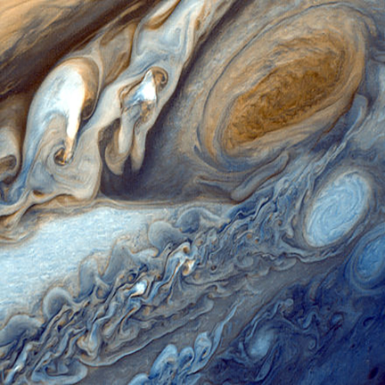
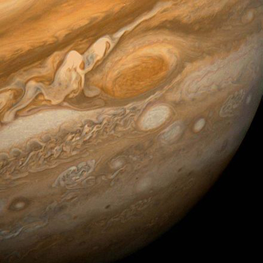
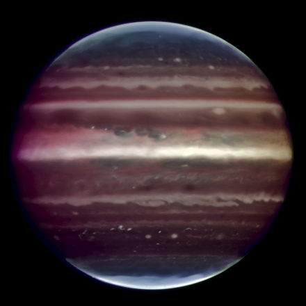

Jupiter is the fifth planet from the Sun and the largest planet in the Solar System. It is a gas giant with mass one-thousandth of that of the Sun but is two and a half times the mass of all the other planets in the Solar System combined. Jupiter is classified as a gas giant along with Saturn, Uranus and Neptune. Together, these four planets are sometimes referred to as the Jovian or outer planets.

False-color detail of Jupiter's atmosphere, imaged by Voyager 1, showing the Great Red Spot and a passing white oval.

This view of Jupiter's Great Red Spot and its surroundings was obtained by Voyager 1 on February 25, 1979, when the spacecraft was 9.2 million km (5.7 million mi) from Jupiter. The white oval storm directly below the Great Red Spot is approximately the same diameter as Earth.

Infrared image of Jupiter taken by the ESO's Very Large Telescope.